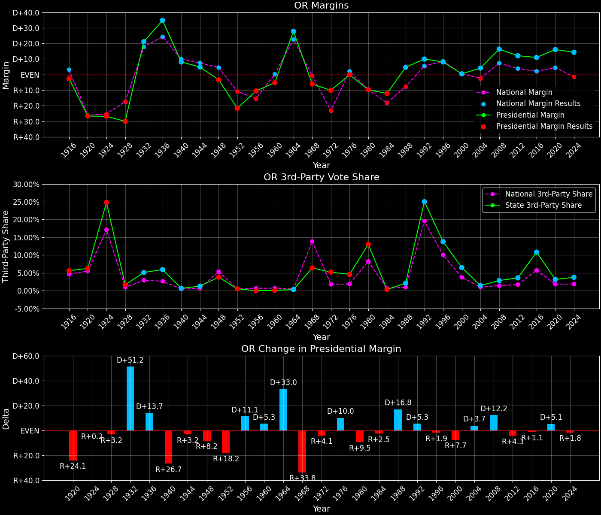
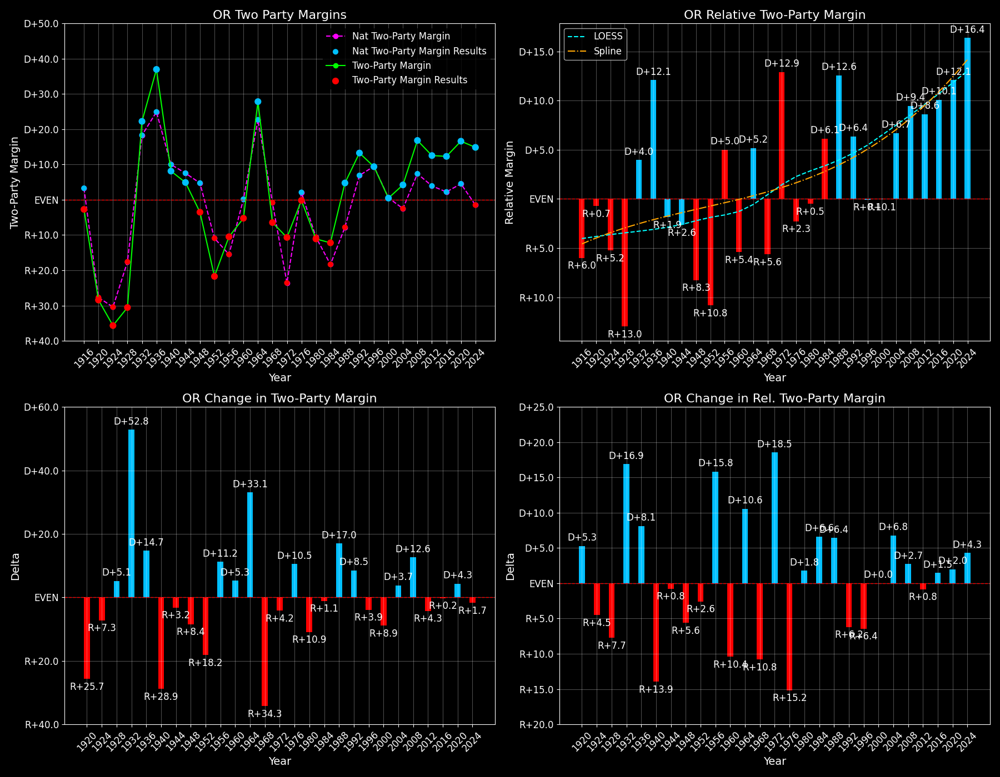

Oregon (OR) — Statewide

Margins · 3P share · Pres. deltas

Relative margins · Relative 3P · Rel. deltas
Oregon (OR) — Total Data
| Year | EVs | D | R | Margin | Rel. Margin | Nat. Margin | Margin Δ | Rel. Margin Δ | Nat. Margin Δ | Total votes |
|---|---|---|---|---|---|---|---|---|---|---|
| 1968 | 6 | 358,866(43.9%) | 408,433(50.0%) | R+6.1 | R+5.5 | R+0.6 | 816,982 | |||
| 1972 | 6 | 392,550(44.7%) | 486,134(55.3%) | R+10.7 | D+12.9 | R+23.5 | R+4.6 | D+18.4 | R+23.0 | 878,684 |
| 1976 | 6 | 490,407(49.9%) | 492,088(50.1%) | R+0.2 | R+2.4 | D+2.2 | D+10.5 | R+15.3 | D+25.7 | 982,495 |
| 1980 | 6 | 456,879(40.1%) | 571,037(50.1%) | R+10.0 | R+0.1 | R+9.9 | R+9.8 | D+2.3 | R+12.1 | 1,140,304 |
| 1984 | 7 | 536,383(43.9%) | 685,540(56.1%) | R+12.2 | D+5.9 | R+18.1 | R+2.2 | D+6.0 | R+8.2 | 1,221,923 |
| 1988 | 7 | 616,206(52.4%) | 560,126(47.6%) | D+4.8 | D+12.5 | R+7.7 | D+17.0 | D+6.6 | D+10.4 | 1,176,332 |
| 1992 | 7 | 621,314(42.8%) | 475,757(32.8%) | D+10.0 | D+4.4 | D+5.6 | D+5.3 | R+8.1 | D+13.3 | 1,451,162 |
| 1996 | 7 | 649,631(47.2%) | 538,155(39.1%) | D+8.1 | R+0.5 | D+8.6 | R+1.9 | R+4.9 | D+3.0 | 1,377,750 |
| 2000 | 7 | 720,342(47.1%) | 713,577(46.6%) | D+0.4 | R+0.1 | D+0.5 | R+7.6 | D+0.4 | R+8.0 | 1,530,549 |
| 2004 | 7 | 943,161(51.5%) | 866,830(47.4%) | D+4.2 | D+6.6 | R+2.5 | D+3.7 | D+6.7 | R+3.0 | 1,829,820 |
| 2008 | 7 | 1,037,291(56.7%) | 738,475(40.4%) | D+16.3 | D+9.1 | D+7.3 | D+12.2 | D+2.5 | D+9.7 | 1,827,864 |
| 2012 | 7 | 970,488(54.6%) | 754,175(42.5%) | D+12.2 | D+8.3 | D+3.9 | R+4.2 | R+0.8 | R+3.4 | 1,775,995 |
| 2016 | 7 | 1,002,106(50.1%) | 782,403(39.1%) | D+11.0 | D+8.9 | D+2.1 | R+1.2 | D+0.6 | R+1.8 | 2,001,336 |
| 2020 | 7 | 1,340,383(56.5%) | 958,447(40.4%) | D+16.1 | D+11.6 | D+4.4 | D+5.1 | D+2.8 | D+2.3 | 2,374,320 |
| 2024 | 8 | 1,240,600(55.3%) | 919,480(41.0%) | D+14.3 | D+15.8 | R+1.5 | R+1.8 | D+4.2 | R+6.0 | 2,244,493 |
Column explanations
- Year
- Election year.
- EVs
- Number of electoral votes allocated to this state or unit.
- D
- Number of votes for the Democratic candidate (raw count(pct%)).
- R
- Number of votes for the Republican candidate (raw count(pct%)).
- Margin
- Margin between the two major-party candidates, including third-party votes ((D - R)/total).
- Rel. Margin
- The presidential margin relative to the national presidential margin (Margin - Nat. Margin).
- Nat. Margin
- The national presidential margin for that year, including third-party votes ((D_total - R_total)/total_votes).
- Δ
- Change (delta) in the value from the previous election year. Blank if no data for previous year.
- Total votes
- Total voter turnout or ballots cast (when provided).
Oregon (OR) — Third-Party Data
| Year | Other votes | 3P Share | 3P Nat. Share | 3P Rel. Share |
|---|---|---|---|---|
| 1968 | 49,683(6.1%) | T+6.1 | T+13.6 | T-7.5 |
| 1972 | 0(0.0%) | T+0.1 | T-0.1 | |
| 1976 | 0(0.0%) | T+0.3 | T-0.3 | |
| 1980 | 112,388(9.9%) | T+9.9 | T+7.0 | T+2.9 |
| 1984 | 0(0.0%) | T+0.1 | T-0.1 | |
| 1988 | 0(0.0%) | T+0.2 | T-0.2 | |
| 1992 | 354,091(24.4%) | T+24.4 | T+19.2 | T+5.2 |
| 1996 | 189,964(13.8%) | T+13.8 | T+9.7 | T+4.1 |
| 2000 | 96,630(6.3%) | T+6.3 | T+3.7 | T+2.7 |
| 2004 | 19,829(1.1%) | T+1.1 | T+0.8 | T+0.2 |
| 2008 | 52,098(2.9%) | T+2.9 | T+1.4 | T+1.5 |
| 2012 | 51,332(2.9%) | T+2.9 | T+1.6 | T+1.3 |
| 2016 | 216,827(10.8%) | T+10.8 | T+5.5 | T+5.3 |
| 2020 | 75,490(3.2%) | T+3.2 | T+1.8 | T+1.3 |
| 2024 | 84,413(3.8%) | T+3.8 | T+1.9 | T+1.9 |
Column explanations
- Year
- Election year.
- Other votes
- Number of votes for third-party (other) candidates (raw count(pct%)).
- 3P Share
- Share of the vote received by third-party (other) candidates.
- 3P Nat. Share
- The national third-party share for that year (3P votes / total votes).
- 3P Rel. Share
- Third-party share relative to the national third-party share (3P share - Nat. 3P share).

Two-party margins · relative · deltas
Oregon (OR) — Two-Party Data
| Year | 2-Party Margin | 2-Party Nat. Margin | 2-Party Rel. Margin | 2-Party Margin Δ | 2-Party Nat. Margin Δ | 2-Party Rel. Margin Δ |
|---|---|---|---|---|---|---|
| 1968 | R+6.5 | R+0.7 | R+5.8 | |||
| 1972 | R+10.7 | R+23.6 | D+12.9 | R+4.2 | R+22.9 | D+18.7 |
| 1976 | R+0.2 | D+2.2 | R+2.4 | D+10.5 | D+25.8 | R+15.3 |
| 1980 | R+11.1 | R+10.6 | R+0.5 | R+10.9 | R+12.8 | D+1.9 |
| 1984 | R+12.2 | R+18.1 | D+5.9 | R+1.1 | R+7.5 | D+6.4 |
| 1988 | D+4.8 | R+7.8 | D+12.5 | D+17.0 | D+10.4 | D+6.6 |
| 1992 | D+13.3 | D+6.9 | D+6.4 | D+8.5 | D+14.7 | R+6.2 |
| 1996 | D+9.4 | D+9.5 | R+0.1 | R+3.9 | D+2.6 | R+6.4 |
| 2000 | D+0.5 | D+0.5 | R+0.1 | R+8.9 | R+8.9 | D+0.0 |
| 2004 | D+4.2 | R+2.5 | D+6.7 | D+3.7 | R+3.0 | D+6.8 |
| 2008 | D+16.8 | D+7.4 | D+9.5 | D+12.6 | D+9.8 | D+2.8 |
| 2012 | D+12.5 | D+3.9 | D+8.6 | R+4.3 | R+3.4 | R+0.9 |
| 2016 | D+12.3 | D+2.2 | D+10.1 | R+0.2 | R+1.7 | D+1.5 |
| 2020 | D+16.6 | D+4.5 | D+12.1 | D+4.3 | D+2.3 | D+2.0 |
| 2024 | D+14.9 | R+1.6 | D+16.4 | R+1.7 | R+6.1 | D+4.4 |
Column explanations
- Year
- Election year.
- 2-Party Margin
- Margin between the two major-party candidates, ignoring third-party votes ((D - R)/(D + R)).
- 2-Party Nat. Margin
- The national presidential margin for that year, including third-party votes ((D_total - R_total)/total_votes).
- 2-Party Rel. Margin
- The presidential margin relative to the national presidential margin (Margin - Nat. Margin).
- Δ
- Change (delta) in the value from the previous election year. Blank if no data for previous year.